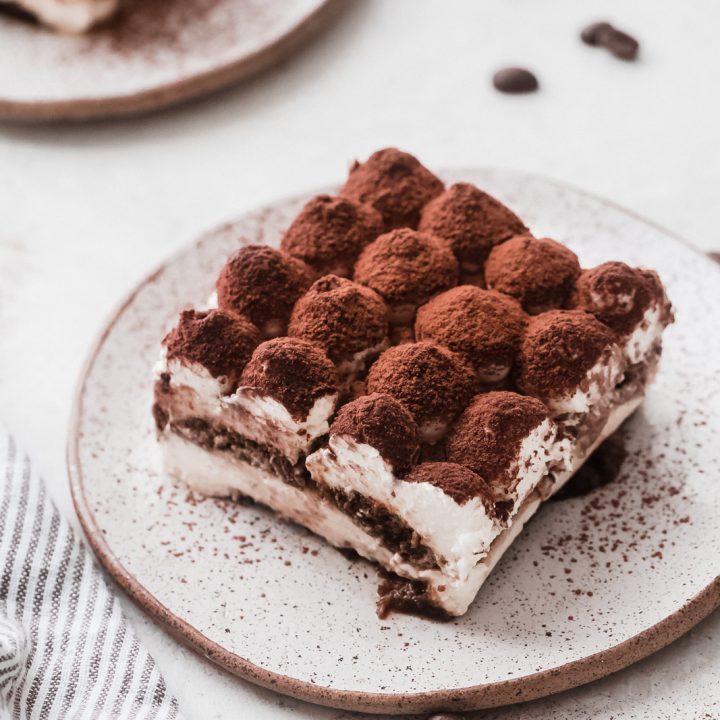

Tirimisu

Description
Italian coffee-flavoured dessert.
Ingriedients
- 568ml pot double cream
- 250g tub mascarpone
- 75ml marsala
- 5 tbsp golden caster sugar
- 300ml strong coffee, made with 2 tbsp coffee granules and 300ml boiling water
- 175g pack sponge fingers
- 25g dark chocolate
- 2 tsp cocoa powder
Steps
- Put the double cream, mascarpone, marsala and golden caster sugar in a large bowl.
- Whisk until the cream and mascarpone have completely combined and have the consistency of thickly whipped cream.
- Pour the coffee into a shallow dish. Dip in a few of the sponge fingers at a time, turning for a few seconds until they are nicely soaked, but not soggy. Layer these in a dish until you’ve used half the sponge fingers, then spread over half of the creamy mixture.
- Using the coarse side of the grater, grate over most of the dark chocolate. Then repeat the layers (you should use up all the coffee), finishing with the creamy layer.
- Cover and chill for a few hours or overnight. Will keep in the fridge for up to two days.
- To serve, dust with the cocoa powder and grate over the remainder of the chocolate.